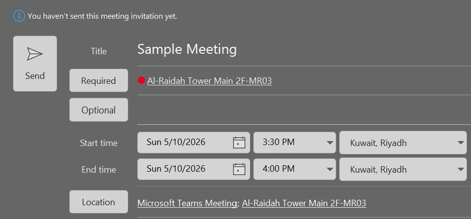
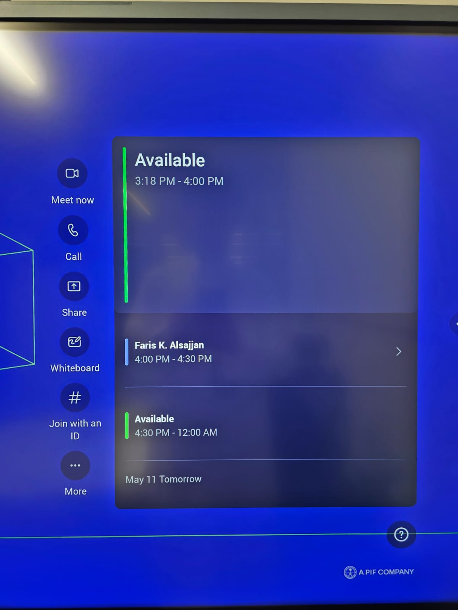
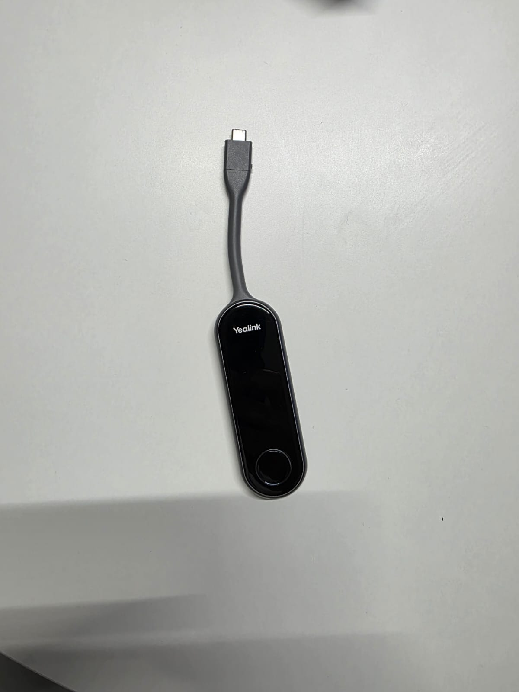
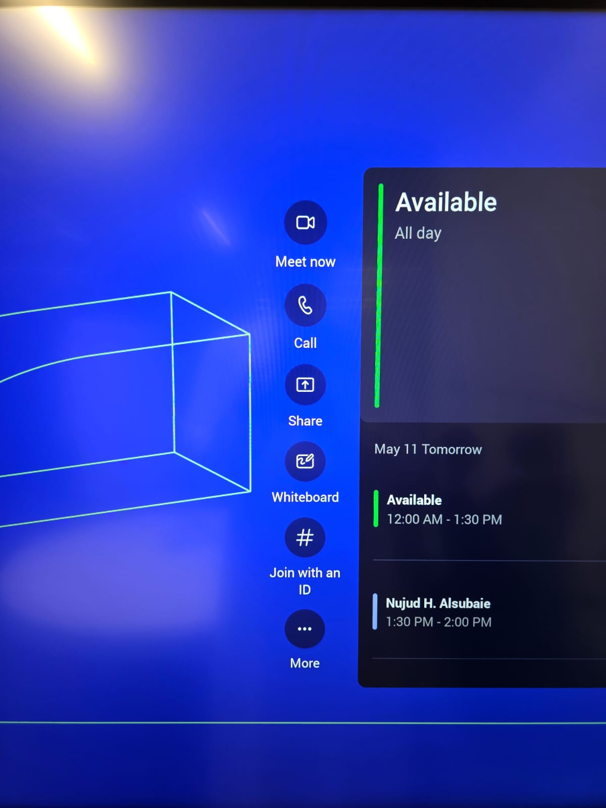
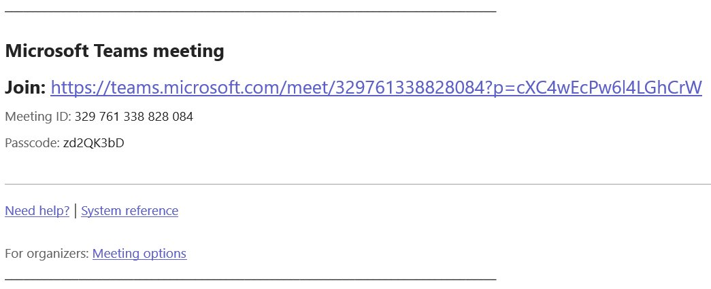
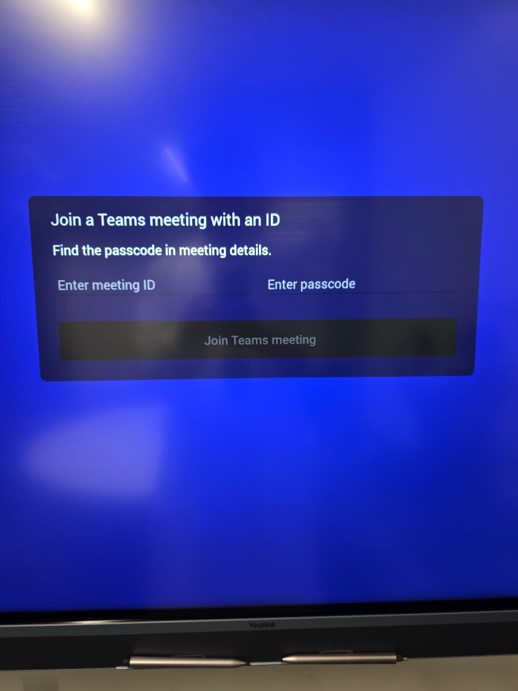
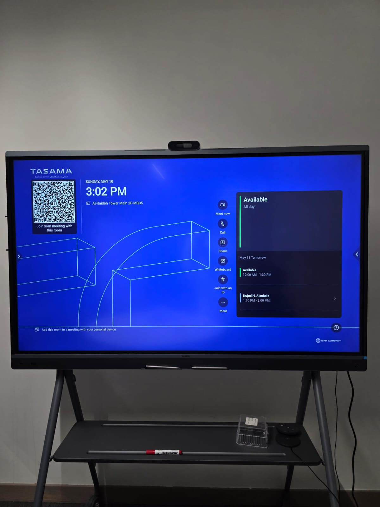
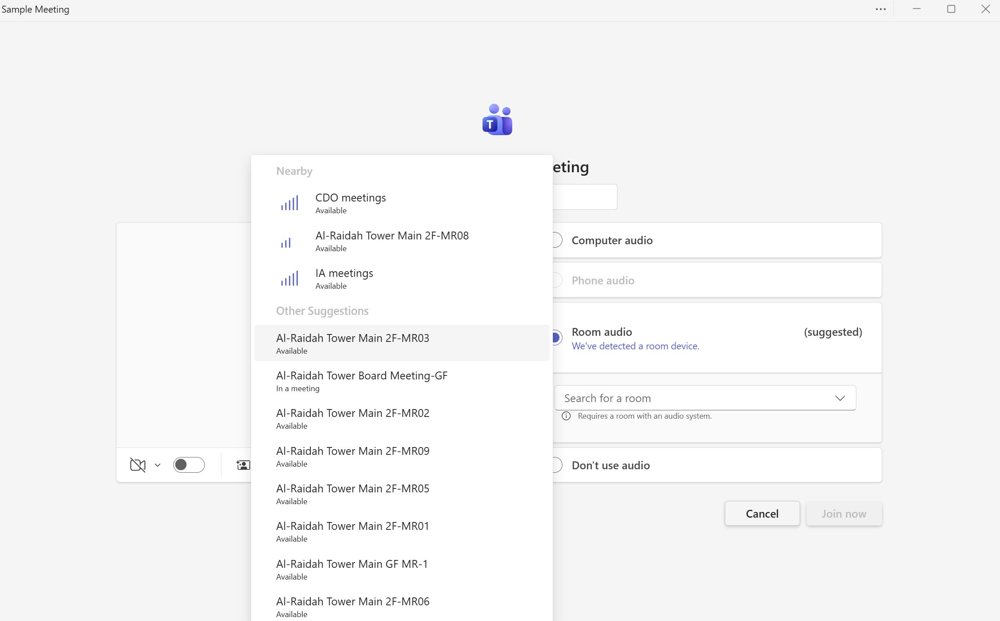

Four ways to bring a TASAMA meeting room into your Teams call — pick the one that fits how you're working today.
The cleanest path. Add the meeting room as a location in Outlook — at meeting time, the room appears on the screen and you join with a single tap. No codes, no scanning.



If the room wasn't added to the invitation — or if it's an external Teams meeting — you can still bring the room in using the Meeting ID and Passcode from the invitation email.
# icon in the side menu).


329 761 338 828) and the Passcode is a short alphanumeric string. Spaces in the ID are optional — type it however you like.
Every Yealink screen displays a unique QR code in the top-left corner. Scanning it from the Teams app on your phone or laptop adds the room as a participant to your current meeting.

Teams detects nearby Yealink rooms via Bluetooth proximity. This lets you control the meeting from your laptop while the room provides audio, camera, and the big screen — best when you want both your familiar laptop view and full room hardware.
Al-Raidah Tower Main 2F-MR05). If yours doesn't appear, search for it.